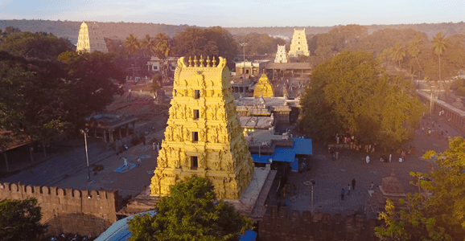

Jyothirlingas
Somnath Temple

Shree Somnath is first among the twelve Aadi Jyotirlings of India. It has a strategic location on the western coast of India.
Ancient Indian traditions maintain a close relationship of Somnath with release of Chandra (Moon God) from the curse of his father-in-law Daksha Prajapati. Moon was married to Twenty-Seven daughters of Daksha. However, he favoured Rohini and neglected other queens. The aggrieved Daksha cursed Moon and the Moon lost power of light. With the advice of Prajapita Brahma, Moon arrived at the Prabhas Teerth and worshipped Bhagvan Shiva. Pleased with the great penance and devotion of Moon, Bhagvan Shiva blessed him and relieved him from the curse of darkness. Pauranic traditions maintain that Moon had built a golden temple, followed by a silver temple by Ravana, Bhagvan Shree Krishna is believed to have built Somnath temple with Sandalwood.
The research based on ancient Indian classical texts show that first Somnath Jyotirling Pran-Pratistha was done on the auspicious third day of brighter half of Shravan month during the tenth Treta yug of Vaivswat Manvantar. Swami Shri Gajananand Saraswatiji, Chairman of Shrimad Aadhya Jagadguru Shankaracharya Vedic Shodh Sansthan, Varanasi suggested that the said first temple was built 7,99,25,105 years ago as derived from the traditions of Prabhas Khand of Skand Puran. Thus, this temple is a perennial source of inspiration for millions of Hindus since time immemorial.
The Moon God is said to have been relieved from the curse of his father-in-law Daksha Prajapati by the blessings of Bhagvan Somnath. In the Shiva Purana and Nandi Upapurana, Shiva said, `I am always present everywhere but specially in 12 forms and places as the Jyotirlingas`. Somnath is one of these 12 holy places. This is the first among the twelve holy Shiva Jyotirlings.
The later sources of history account for several desecrations by Muslims invaders during eleventh to eighteen century A.D. The temple was rebuilt every time with the reconstructive spirit of the people. The modern temple was reconstructed with the resolve of Sardar Patel who visited the ruins of Somnath temple on November 13 1947. Then President of India, Late Dr.Rajendra Prasad, performed the Pran-Pratistha at the existing temple on 11 May 1951.
Other spots in the temple are Shri Kapardi Vinayak and Shri Hanuman Temple in addition to Vallabhghat. Vallabhghat is a beautiful sunset point. The temple is illuminated every evening. Similarly, the Sound & Light Show “Jay Somnath” is also displayed every night at 7.45 to 8.45, which allows the pilgrims an ethereal experience in the backdrop of grand Somnath temple and the holy wave sounds of the Ocean.
Mallikarjuna Temple
When Goddess Parvati asked Lord Shiva about his most desired place apart from Kailasa in the Universe created by him, he chose the eternally beautiful place nestled among picturesque nature, the avatar of Sri Chakra, the holy Srisailam. In such a significant location, Shiva-Shakti take the form of Sri Mallikarjuna Bhramaramba to bless all their devotees.
As proven in Puranas, Srisailam has great ancient significance. Among the 12 Jyotirlingas, the 2nd is the Mallikarjuna Swamy Lingam; among the 18 Maha Shakti Peethas, the 6th is Sri Bhramaramba Devi temple. Srisailam is the only temple where two such icons exist under one temple premise, such is its significance. Srisailam has many other names like Srigiri, Sirigiri, Sriparvatam and Srinagam. Narasimhaswamy in Satyayugam, Sri Rama alongside Sita Devi in Tretayugam, all five Pandavas in Dvaparayugam, many Yogis, Rishis, Munis, preachers, spiritual teachers, Kings, poets and devotees in Kalyug have visited Srisailam and earned the blessings of Sri Bhramarambika Devi and Mallikarjuna Swamy.
Mahakaleshwar Temple
When did the Mahakala temple first come in existence, is difficult to tell. However, the event may be assigned to the Pre-historic period. Puranas narrate that it was first established by Prajapita Brahma. There is reference to the appointment of prince Kumarasena by king Chanda Pradyota in 6th c. BC for looking after the law and order situations of Mahakala temple. The punch-marked coins of Ujjain, belonging to 4th-3rd c. BC, bear the figure of Lord Siva on them.
Mahakala temple is also mentioned in several ancient Indian poetic texts. According to these texts, the temple had been very magnificent and magnanimous.Its foundation and platform were built of stones. The temple rested on the wooden pillars.There had been no sikharas on the temples prior to the Gupta period. The roofs of temples had mostly been flat.Possibly due to this fact, Kalidasa in Raghuvansam described this temple as 'Niketana'.The palace of the king had been in the vicinity of the temple. In the early part of the Meghadutam (Purva Megha),Kalidasa gives a fascinating description of the Mahakala temple.
It appears that this Chandisvara temple might have been a unique example of the then art and architecture. It may be ascertained that how splendid had been the temple of the main Deity of that town which possessedmulti-storeyed gold-plated palaces and buildings and the superb artistic grandeur. The temple was enclosed by high ramparts attached with the entry-gates.At twilight the lively rows of glittering lamps enlightened the temple-complex.
Omkareshwar Temple
Omkareshwar Jyotirlinga, one of the twelve sacred Jyotirlingas dedicated to Lord Shiva, is located on the picturesque Mandhata island in the Narmada river, Madhya Pradesh. The island, shaped like the holy 'Om' symbol, adds to its spiritual allure. According to legend, the deity appeared here in response to the intense penance of the Vindhya mountain. The temple's stunning Nagara-style architecture, coupled with the serene river surroundings, makes it a significant pilgrimage site. Devotees believe that prayers offered here can absolve sins and lead to moksha (salvation). The Omkareshwar temple, along with the nearby Amareshwar temple, attracts thousands of pilgrims, especially during festivals like Maha Shivaratri and Kartik Purnima, creating an atmosphere of deep devotion and reverence.
Kedarnath Temple
The legend behind this famous place of worship is that after the Mahabharata war, the Pandavas performed a penance to purge their sins - of killing their kin. In order to be able to do this, they were advised to seek Lord Shiva's pardon. They searched high and low and finally, saw Lord Shiva at the spot where the jyotirlinga in Kedarnath is situated today.
It is said that Lord Shiva was not willing to forgive the Pandavas for their deceit and sins during the war and hence hid himself from them. He disguised himself as a bull and disappeared into the ground.
The second Pandava, Bhimasena, tried to pull him out of the ground by tugging at his tail and hind legs. However, Lord Shiva dug himself deeper and only reappeared in parts in different places - the hump in Kedarnath, the arms in Tunganath, the navel and stomach in Madhyamaheshwar, the face in Rudranath, and the hair and head in Kalpeshwar.
The Pandavas built temples at these five places - the Panch Kedars - for worshipping Shiva. This freed them from their sins.
Lord Shiva further promised to stay on in the sacred spot as a triangular jyotirlinga. This is why Kedarnath is so famous and revered by devotees.
Bhimashankar Temple
There are different legends associated with the Bhimashankar Jyotirlinga. Here are two of them.
According to one legend, a demon called Tripurasura performed penance in the Bhimashankar jungle to please Lord Shiva and ask him for the gift of immortality. Lord Shiva was pleased with his devotion and granted him immortality on the condition that he would use his power to help the local people. Tripurasura agreed with Him. However, over time, he forgot his promise and began to harass both humans and the gods. When the gods begged Lord Shiva to do something to stop the ensuing chaos, the Lord prayed to his consort Goddess Parvati. Both of them appeared as Ardhanari Nateshwara and killed Tripurasura, after which peace prevailed.
According to another legend, in the Dakini forests on the ranges of the Sahyadri Mountains lived an asura (demon) named Bhima with his mother Karkati. He was, in fact, the son of Kumbharkarna, the younger brother of King Ravana. When he learnt that Lord Vishnu had killed his father in his avatar as Rama, he was furious. He vowed revenge and performed severe penance to please Lord Brahma.
In return, Brahma blessed him with immense strength, which he used to terrorize the world. He imprisoned an ardent devotee of Lord Shiva, Kamrupeshwar and demanded that he pray to him instead of Lord Shiva. When Kamrupeshwar refused to do so, Bhima raised his sword to destroy the Shivalinga. That is when Lord Shiva appeared before him and reduced him to ashes. The place where Lord Shiva manifested himself is the spot the Shivalinga is believed to be now.
Kashi-Vishwanath Temple
Kashi Vishwanath Temple, one of the most revered and ancient Hindu temples dedicated to Lord Shiva, is located in the sacred city of Varanasi (Kashi) in Uttar Pradesh, India. This temple is considered one of the twelve Jyotirlingas, the holiest of Shiva temples. The temple stands on the western bank of the holy river Ganges and is a prominent pilgrimage site for devotees seeking spiritual liberation (moksha). The current structure of the temple was built in 1780 by the Maratha monarch, Maharani Ahilyabai Holkar of Indore. The temple complex is known for its intricate architecture and its spire, which is covered with gold donated by Maharaja Ranjit Singh. The Kashi Vishwanath Temple attracts millions of pilgrims and tourists annually, especially during festivals like Maha Shivaratri, creating an atmosphere of profound devotion and spiritual fervor. For Hindus, a visit to Kashi Vishwanath is a journey to the heart of their faith, offering a direct connection to the divine presence of Lord Shiva.
Trimbakeshwar Mandir
Trimbakeshwar Temple, one of the twelve Jyotirlingas dedicated to Lord Shiva, is located in the town of Trimbak, near Nashik in Maharashtra, India. This ancient temple, renowned for its unique architectural beauty, stands at the source of the sacred Godavari river, which holds great religious significance in Hinduism. The temple's Jyotirlinga features a rare appearance with three faces embodying Lord Brahma, Lord Vishnu, and Lord Shiva, symbolizing the trinity of Hinduism. Built in the Nagara style, the temple is adorned with intricate stone carvings and sculptures, reflecting the rich cultural heritage of the region. Trimbakeshwar is a major pilgrimage site, attracting devotees who seek blessings and spiritual cleansing, especially during the Kumbh Mela, which is held every twelve years. The temple's serene surroundings, coupled with its profound spiritual ambiance, make it a place of deep reverence and a must-visit destination for those on a spiritual journey.
Baidyanath Temple

Baidyanath Temple, also known as Baba Baidyanath Dham, is one of the twelve Jyotirlingas dedicated to Lord Shiva and is located in Deoghar, Jharkhand, India. This revered temple complex is a significant pilgrimage site, drawing devotees from all over India, especially during the month of Shravan (July-August). According to legend, the demon king Ravana worshipped Shiva here to gain invincibility and unparalleled power. Impressed by Ravana's devotion, Shiva manifested as Baidyanath, symbolizing the "Lord of Physicians," and granted him boons. The temple architecture is a blend of ancient and medieval styles, and its sanctum houses the sacred Jyotirlinga. Pilgrims believe that offering prayers at Baidyanath Temple can cure ailments and bestow spiritual liberation. The temple complex also includes several other shrines, adding to its religious significance. Baidyanath Temple, with its deep spiritual roots and vibrant rituals, remains a beacon of faith and devotion, attracting millions of visitors seeking blessings and divine grace.
Nageshvara Temple
Nageshvara Temple, one of the twelve sacred Jyotirlingas dedicated to Lord Shiva, is located near Dwarka in the state of Gujarat, India. This ancient temple is revered as an important pilgrimage site and is situated along the scenic Saurashtra coast. According to Hindu mythology, the Nageshvara Jyotirlinga is believed to protect devotees from all poisons and bestow them with powerful blessings. The legend associated with this temple tells the story of a demon named Daruka who terrorized the devotees of Shiva. To protect his followers, Shiva manifested as Nageshvara and vanquished the demon, symbolizing the victory of good over evil.
The temple complex features a striking statue of a large Shiva Lingam and a massive statue of Lord Shiva in a meditative pose, which adds to the serene and spiritual atmosphere of the place. The architecture of the Nageshvara Temple is characterized by its intricate carvings and traditional design, reflecting the rich cultural heritage of the region. Pilgrims visit the temple throughout the year, particularly during the festival of Maha Shivaratri, when the temple comes alive with fervent devotion and elaborate rituals. The Nageshvara Temple stands as a testament to the enduring faith and reverence for Lord Shiva, offering a profound spiritual experience to all who visit.
Rameshwaram Temple

Rameshwaram Temple, also known as Ramanathaswamy Temple, is one of the most revered Hindu shrines dedicated to Lord Shiva and is located on Rameshwaram island in Tamil Nadu, India. This temple is one of the twelve Jyotirlingas and is also part of the Char Dham pilgrimage, which holds immense significance in Hinduism. According to legend, Lord Rama, an incarnation of Vishnu, prayed to Shiva here to absolve any sins committed during his battle against the demon king Ravana. To honor Shiva, Rama instructed Hanuman to bring a lingam from the Himalayas, but when he was delayed, Sita, Rama's consort, built a lingam from the sand, which is the main deity worshipped today.
The temple is renowned for its stunning Dravidian architecture, featuring towering gopurams (gateway towers) and long, ornately carved corridors. The corridors, known as the world's longest temple corridor, are a marvel of engineering and artistry. The temple complex also includes 22 teerthams (holy water tanks), where pilgrims perform ritual baths for purification.
Rameshwaram Temple attracts millions of devotees and tourists each year, especially during Maha Shivaratri and other major festivals. The serene coastal setting, combined with the temple's spiritual ambiance and historical significance, makes it a profound pilgrimage destination for those seeking divine blessings and spiritual solace.
Grishneshwar Temple
Grishneshwar Temple, also known as Grishneshwar Jyotirlinga Temple, is a revered Hindu shrine dedicated to Lord Shiva and is located near Ellora in Maharashtra, India. It is one of the twelve Jyotirlingas, which are considered the holiest abodes of Shiva. The temple is situated close to the UNESCO World Heritage site of Ellora Caves, known for its spectacular rock-cut architecture.
According to legend, a devout woman named Kusuma worshipped Shiva with great devotion. Pleased with her prayers, Shiva appeared before her as Grishneshwar (the lord of compassion) and granted her wishes. The temple houses the lingam (symbol of Shiva) that manifested during this divine event.
The architecture of Grishneshwar Temple reflects traditional South Indian temple style, characterized by intricate carvings, sculptures, and a towering spire. The temple complex includes various halls, courtyards, and shrines dedicated to other deities.
Devotees visit Grishneshwar Temple throughout the year, especially during festivals like Maha Shivaratri, to seek blessings and spiritual fulfillment. The temple's serene surroundings and historical significance make it a cherished pilgrimage destination, offering a profound spiritual experience to all who visit.